Plants
季節ごとの見頃な植物
春
-
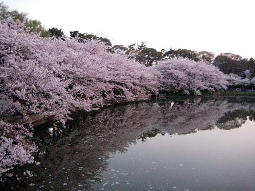
- ソメイヨシノ
-
オオシマザクラとエドヒガンを交配して生まれた桜の品種。
淡いピンク色の花を咲かせ、日本で最も親しまれている桜。
見頃時期：3月下旬～4月上旬ごろ
-
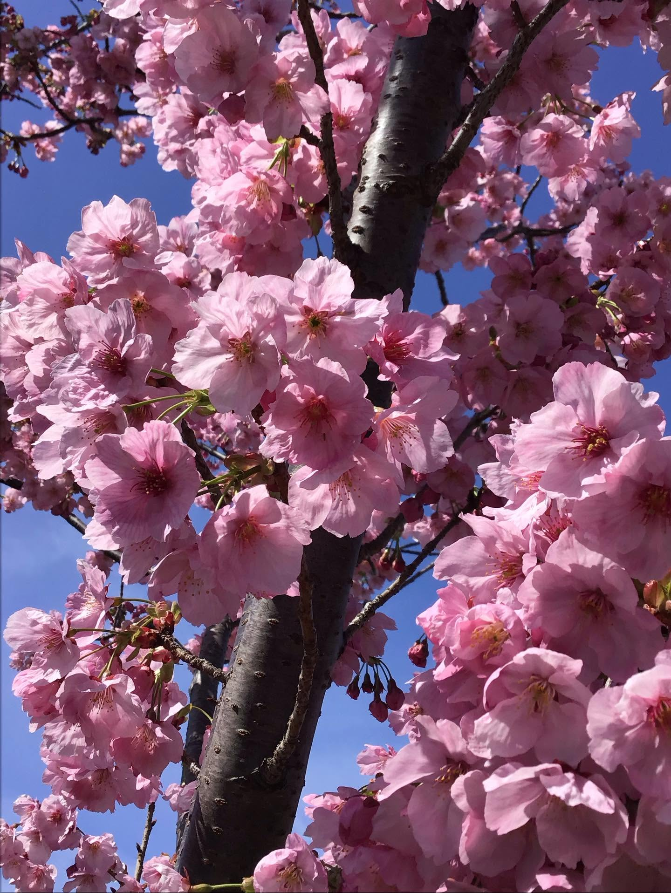
- 陽光桜
-
アマギヨシノとカンヒザクラを交配して生まれた桜の品種。
濃いピンク色の花を咲かせ、ソメイヨシノよりもやや早く開花するのが特徴
見頃時期：3月下旬～4月上旬ごろ
-
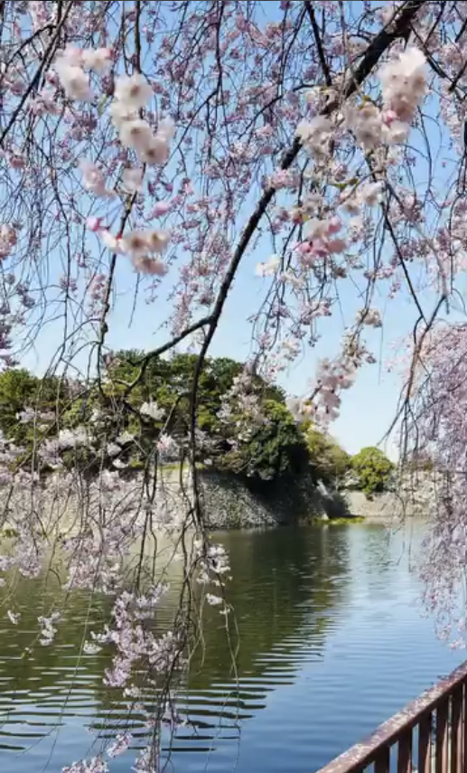
- シダレザクラ
-
別名イトザクラ(糸桜)。
枝が長く垂れ下がるのが特徴。
見頃時期：3月下旬～4月上旬ごろ
-
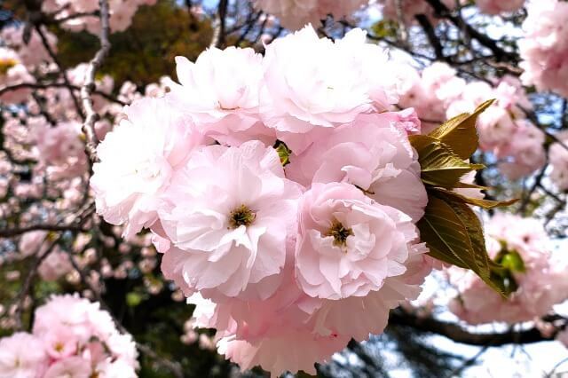
- 八重桜
-
花びらが重なり八重咲きになる桜の総称。
華やかでボリュームのある花が特徴で、ソメイヨシノより少し遅れて見頃を迎える。
見頃時期：4月中旬～4月下旬ごろ
春～初夏
-
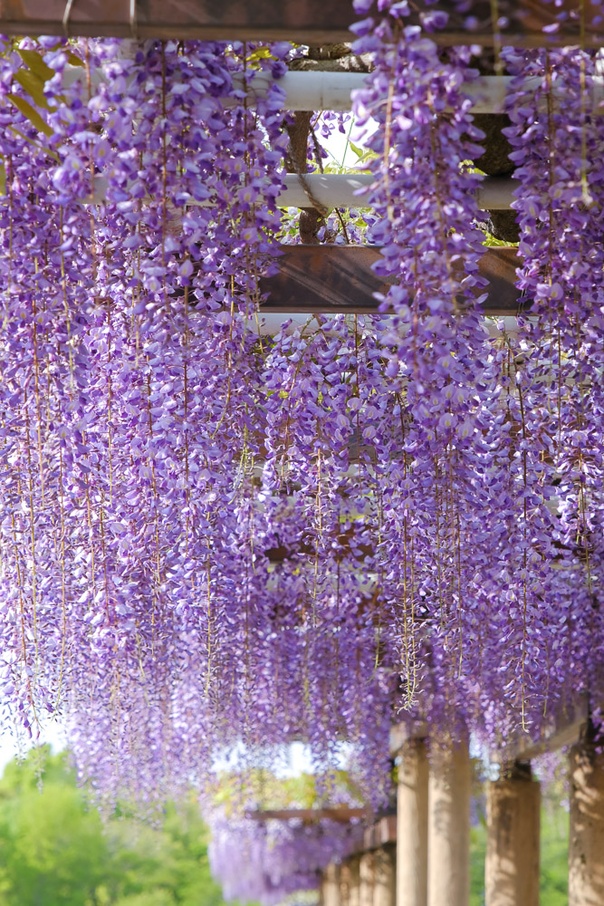
- 藤
-
マメ科フジ属のつる性落葉樹。
つるを伸ばして他の木や構造物に巻きつきながら成長する。
長く垂れ下がる紫色や白色の花房が特徴。 見頃時期：4月下旬～5月上旬ごろ
初夏～夏
-
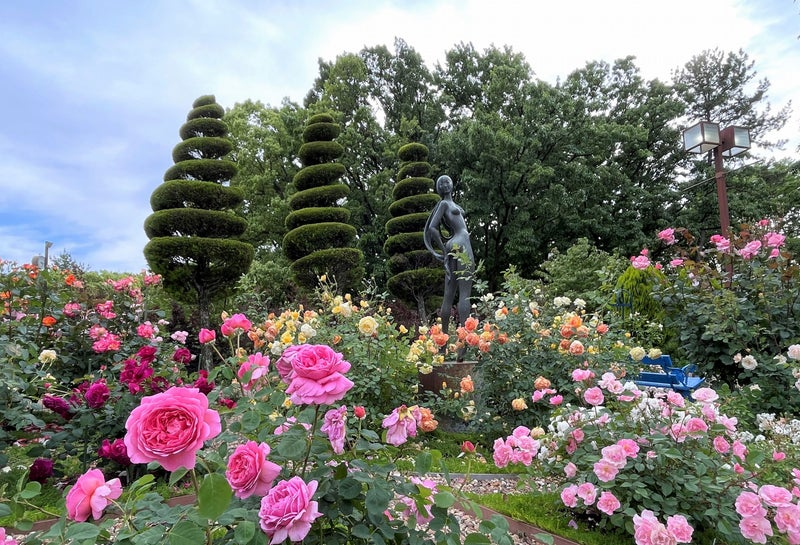
- バラ
-
バラ科バラ属の落葉低木やつる植物の総称。
色や形、香りが豊富で華やかな花を長く楽しめることが特徴。
名城公園には，数十種類以上の品種が植えられている。
見頃時期：5月下旬～6月上旬
-
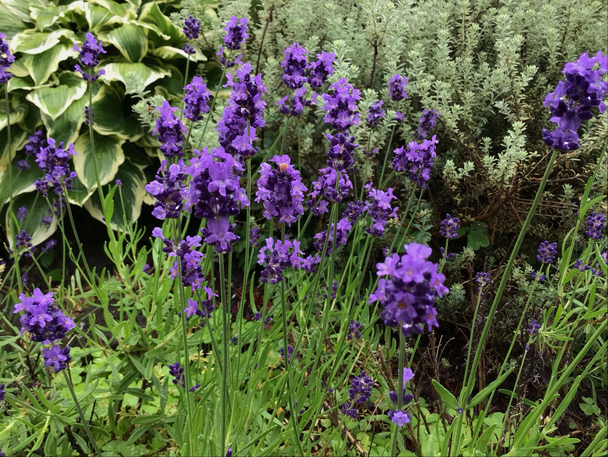
- ラベンダー
-
シソ科ラベンダー属の常緑低木。
紫の小さな花を穂状に咲かせ、爽やかな香りが特徴。
見頃時期：5月下旬～7月上旬ごろ
-
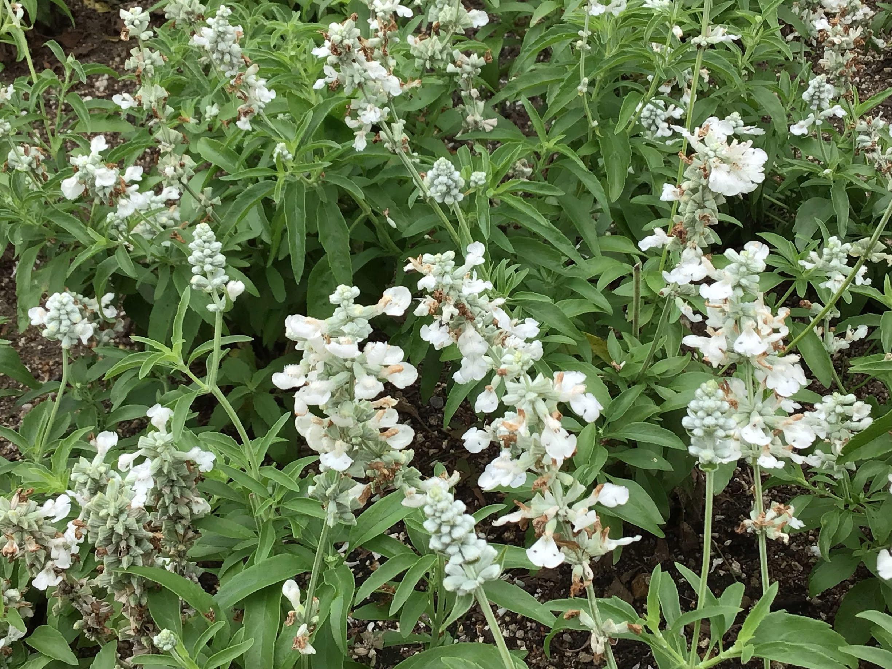
- サルビア・フォリナセア
-
シソ科サルビア属の一年草。
穂状に花を咲かせ、青色や白色の花が夏から秋にかけて楽しめる。
見頃時期：6月～10月ごろ
-
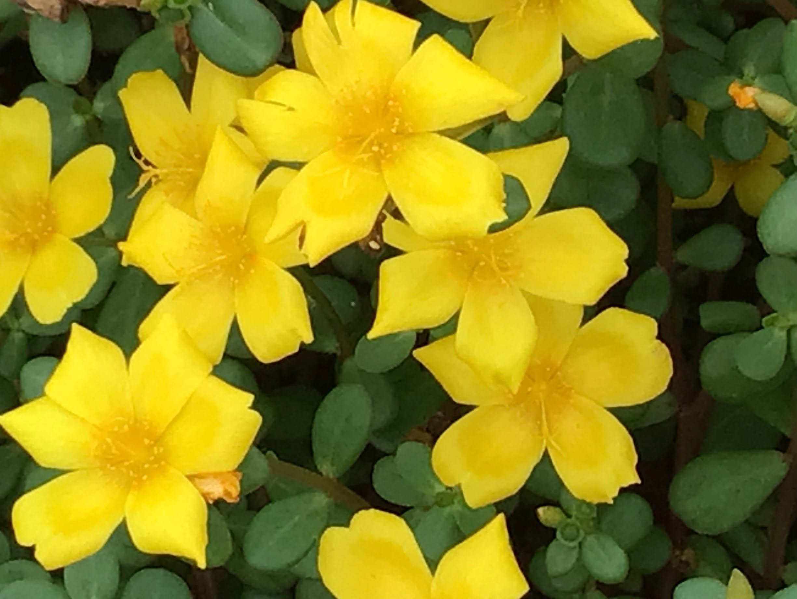
- ポーチュラカ
-
スベリヒユ科ポーチュラカ属の一年草。
暑さや乾燥に強い。
夏の花壇を彩る代表的な植物
見頃時期：7月～9月ごろ
秋
-
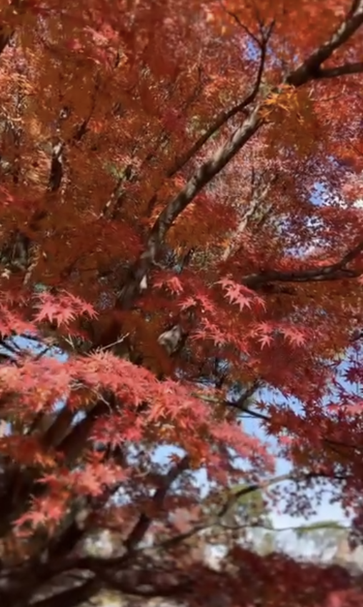
- イロハモミジ
-
ムクロジ科カエデ属の落葉高木
手のひら状に5～7つの深い切れ込みがある葉が特徴。
赤色や黄色に紅葉する。
見頃時期：11月下旬～12月上旬ごろ
-
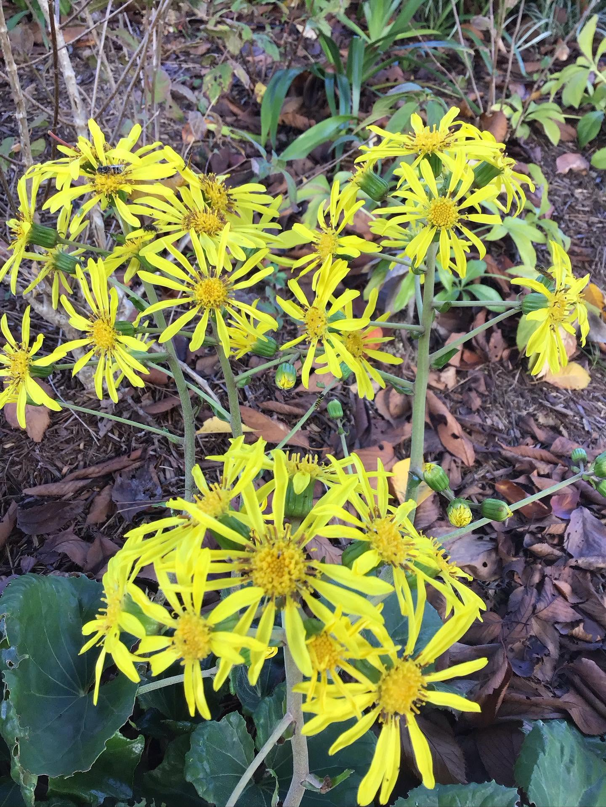
- ツワブキ
-
キク科ツワブキ属の多年草。
つやのある丸い葉と秋に咲く鮮やかな黄色の花が特徴。
見頃時期：10月下旬～11月ごろ
冬
-
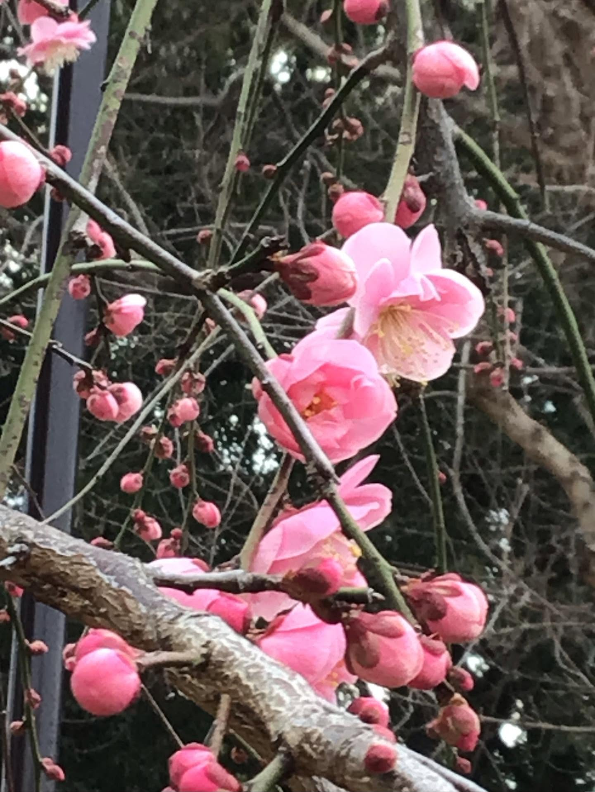
- 梅
-
バラ科サクラ属の落葉高木。
寒さの中で、白色や淡いピンク色の花を咲かせる。
見頃時期：2月中旬～3月上旬ごろ
-
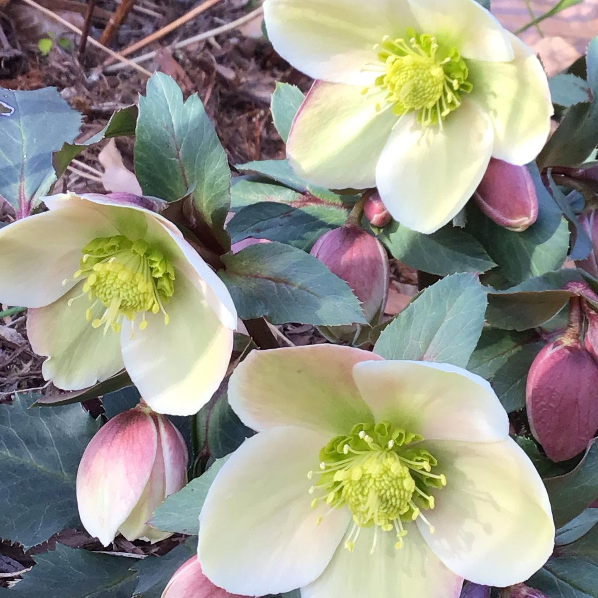
- クリスマスローズ
-
キンポウゲ科クリスマスローズ属の多年草。
うつむくように咲く上品な花が特徴。
見頃時期：2月～3月ごろ